L’eau qui alimente les chaudières doit être d’une qualité irréprochable afin d’éviter le phénomène de corrosion et l’encrassement à l’intérieur de la chaudière et des tuyauteries, vannes, pompes et autres équipements ou appareils de régulation. Les impuretés d’une eau, limpide d’apparence, peuvent être pour les chaudières et la tuyauterie la cause de graves inconvénients : dépôts de boue, tartre et corrosion.
L’objectif de ce module est de vous permettre de comprendre l’importance de la qualité de l’eau d’alimentation des chaudières en définissant toutes ses caractéristiques et les nombreux traitements indispensables à effectuer pour produire de la vapeur aux conditions souhaitées.
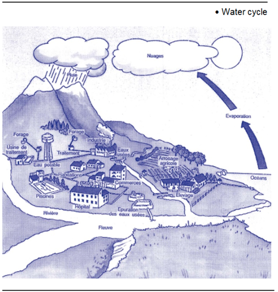
L’eau (H2O) est le résultat de l’union entre deux atomes d’hydrogène (H2) et un atome d’oxygène (O). Mais au cours de son cycle de vie, elle se charge d’impuretés qui peuvent être regroupés en trois catégories :
Il s’agit de boue, de sable, d’argile et de substances organiques (végétales ou animales). Elles ne doivent pas se retrouver dans le circuit de la chaudière, sinon elles provoquent des dépôts ou des phénomènes de moussage. Il convient donc de filtrer l’eau pour séparer les MES.
Ces sels proviennent de la dissolution des roches rencontrées par l’eau lors de son parcours. Dans l’eau d’alimentation de chaudière il faut éviter la présence des éléments suivants :
Ces éléments sont à l’origine de composés comme les tartres et la silice qui rendent l’eau « dure ». Dans les endroits les plus chauds, ils se déposent sur les parois des tuyauteries ou dans les ballons de chaudières. Il faut les éliminer à la source, par un procédé qui les extrait de l’eau alimentaire, ou empêcher leur agglomération en composé solide grâce aux produits chimiques de conditionnement.
Tous les sels dissous dans l’eau se présentent sous forme d’ions, qui sont des composés chimiques chargés positivement ou négativement.
Les gaz dissous néfastes pour la chaudière sont le dioxyde de carbone (CO2) et l’oxygène (O2). Le premier est à l’origine du tartre, le second de la corrosion. Il faut les éliminer par un dégazage et par des produits chimiques ajoutés à l’eau (conditionnement).
La matière, sous toutes ses formes (gaz, liquide, solide), est constituée de molécules, qui sont des assemblages d’atomes. L’atome peut s’apparenter à un nuage de petites billes – les électrons –, qui tournent autour d’une grosse boule – le noyau. L’image des planètes tournant autour du Soleil illustre bien cette idée. Les électrons peuvent être comparés à des mains qui permettent aux atomes de se lier les uns aux autres. Le noyau est le corps de l’atome.
Ainsi les atomes, selon leur nombre de mains, peuvent s’associer avec plus ou moins de partenaires pour former des molécules.
Dans l’exemple de l’eau (H2O), l’oxygène possède deux mains et l’hydrogène n’en a qu’une. C’est pour cette raison que l’on trouve deux atomes d’hydrogène liés à un seul atome d’oxygène dans la molécule d’eau.
Les électrons ont une charge électrique négative (–), alors que les noyaux ont des charges positives (+). Un atome n’est pas chargé électriquement car ils possèdent autant de charges négatives (–) – les électrons – que de charges positives (+) – le noyau.
Un ion ressemble à un atome qui a des électrons en moins ou en plus, donc il ressemble à un atome dont la charge est positive ou négative. Ils peuvent comme les atomes s’assembler pour former des molécules. Les molécules d’eau peuvent se décomposer en deux composés, H+ et OH–, appartenant à la famille des ions : H+ et OH– s’assemblent pour donner H2O, et H2O se dissocie en H+ et OH–. Dans l’eau presque tous les éléments sont des ions. La qualité de l’eau dépend de la quantité de chacun des ions.
La concentration est le moyen de compter les substances chimiques, notamment dans une solution. Son unité est une quantité (une masse ou un nombre) par unité de volume. Par exemple, 2 g de sel dans un litre d’eau représentent une concentration de sel dans l’eau de 2000 mg/l. Nous utilisons le milligramme par litre (mg/l). Cette unité est extrêmement employée dans toutes les analyses de qualité d’eau.
Les acides, les bases et les sels constituent les trois principales catégories de composés chimiques qui interviennent à l’occasion du traitement de l’eau d’alimentation. En solution, ces composés se dissocient en particules chargées, qu’on appelle ions.
Les composés acides sont des composés qui contiennent de l’hydrogène, comme, par exemple l’acide chlorhydrique (HCl). Lorsqu’on met ce dernier en solution dans l’eau, l’acide se dissocie pour libérer des ions dérivés de l’hydrogène (l’ion hydronium, H+), qui fait qu’une solution est dite acide.
Les bases, appelées aussi alcalis, sont des composés qui contiennent des hydroxyles (OH–), comme par exemple l’hydroxyde de sodium (soude NaOH). Dans l’eau, ce dernier se dissocie pour libérer des ions hydroxyles (OH–). C’est cette libération d’ions hydroxyles qui fait qu’une solution est dite basique. Les acides et les bases réagissent entre eux et se neutralisent. Il en résulte la formation d’un sel et de l’eau. Par exemple, le sel de cuisine est formé lorsque l’acide chlorhydrique (HCl) est neutralisée par une base, la soude (NaOH ou hydroxyde de sodium).
Ce sel en solution se dissocie en ions positifs (Na+) et en ions négatifs(Cl–). Les positifs s’appellent cations et les négatifs s’appellent anions.
Le potentiel hydrogène (pH) indique le degré d’acidité d’une solution (voir également les modules n° 3 et n° 8). Il dépend de la concentration en H+ dans l’eau et il est mesuré sur une échelle allant de 0 à 14. Plus il y a de H+, plus le pH est bas (inférieur à 7), plus la solution est acide. Moins il y a de H+, plus le pH est grand (supérieur à 7), moins la solution est acide. S’il y a autant de H+ que de OH–, la solution est neutre, et le pH est égal à 7.
Remarque : Plus la température de l’eau s’élève, plus son acidité augmente (et donc plus elle est corrosive). En règle générale, le pH est donc mesuré à 20 °C.
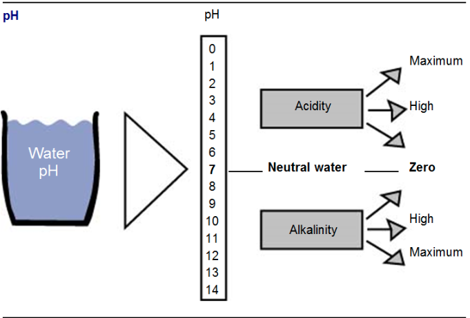
Pour caractériser la qualité de l’eau de chaudière, nous utilisons des paramètres globaux appelés « titres ». Ils permettent de connaître la quantité des éléments chimiques importants présents dans l’eau, c’est-à-dire leur concentration.
Leur unité est le milliéquivalent par litre (meq/l) ou le degré français (°f). Cette unité représente la masse nécessaire d’un ion pour constituer une unité de charge électrique dans un litre d’eau. Les trois principaux titres utilisés dans nos usines d’incinération sont :
Le TA s’apparente à la somme des concentrations des carbonates (CO32–) et de l’hydroxyle (OH–). Le TAC s’apparente à la somme des concentrations des carbonates (CO32–), de l’hydroxyle (OH–) et des bicarbonates (HCO3–). Ces deux titres informent donc sur le pH et la possibilité de dépôts de tartre.
Alors que le TH s’apparente à la somme des concentrations du calcium (Ca2+) et du magnésium (Mg2+), responsables des dépôts de tartre. Ils permettent de déterminer le pouvoir entartrant de l’eau et son acidité, les deux paramètres essentiels pour la qualité des eaux de chaudières. Les valeurs guides (voir tableau index) dépendent du type d’installation, mais il faut toujours avoir un TH proche de 0.
La conductivité représente la capacité de l’eau à laisser passer un courant électrique. Elle dépend directement de la quantité d’ions en solution car ils sont les uniques « transporteurs » du courant dans l’eau. Elle permet de mesurer la teneur de l’eau en sels dissous : plus une eau est salée, plus sa conductivité est grande.
La conductivité est pratique car elle renseigne très facilement et rapidement sur le pouvoir de corrosion de l’eau, ainsi que sur son pouvoir de déposer des solides. Son unité est le micro Siemens par centimètre (µS/cm). Plus l’eau est pure, plus sa conductivité est faible :
Un traitement de l’eau de nos chaudières est nécessaire pour lutter contre des phénomènes indésirables à l’origine d’usures prématurées et de détériorations importantes de notre équipement, mais aussi de perte de rendement.
Sous l’effet de la température, certains sels, en particulier les sels de calcium et de magnésium, vont précipiter sous forme de dépôts durs et adhérents.
Ces dépôts vont se localiser préférentiellement sur les tubes les plus chauds. Ainsi ils diminuent les sections de passage pour les tubes des chaudières, provoquant une baisse d’irrigation des surfaces d’échange. Ils diminuent l’échange thermique et engendrent des surchauffes locales qui affaiblissent la résistance mécanique des aciers et peuvent provoquer à terme des déformations voire même leur rupture ou un coup de feu. Par ailleurs, ces adhésions favorisent la corrosion en présence d’oxygène dissous.
Les boues non adhérentes se déposent en fond de chaudière pour les plus denses ou restent en suspension et peuvent être entraînées avec la vapeur (primage) et ainsi la polluer.
C’est l’entraînement dans la vapeur de gouttes d’eau contenant des sels minéraux dissous ou des matières en suspension.
Le primage peut avoir pour origine :
Le primage peut entraîner :
La corrosion correspond à un passage en solution du fer dans l’eau. Ceci se traduit par la formation de rouille pouvant conduire à la perforation de la tuyauterie. Les surfaces d’échange des chaudières côté gaz de combustion et côté eau subissent des corrosions.
Pour le côté eau, les corrosions peuvent avoir pour origine :
L’oxygène est l’un des principaux responsable des corrosions (par oxydation). Il y a apparition de piqûres très profondes de faible diamètre. Ces piqûres rongent le tube de l’intérieur. L’oxygène est particulièrement néfaste pour les lignes de retour des condensats et pour toute la chaudière durant les arrêts si aucune mesure de conservation n’est prise.
Le dioxyde de carbone entraîné dans la vapeur provoque une acidification des condensats. Cela se traduit par un amincissement généralisé du métal.
Afin d’éviter ces phénomènes, il convient d’adapter la qualité de l’eau aux caractéristiques de la chaudière. Pour cela, il faut enlever les éléments indésirables (MES, sels dissous, gaz). C’est le rôle de l’épuration ou prétraitement. Il faut aussi réaliser un traitement en continu en ajoutant des réactifs appropriés capables de corriger chimiquement la qualité de l’eau.
Divers systèmes de traitement sont utilisés.
Il existe trois principaux types de traitement de l'eau :
Les traitements sont variables d’un site à l’autre car soit la qualité de l’eau à traiter n’est pas la même (elle dépend en effet de la nature des sols), soit la vapeur n’a pas toujours la même qualité (dépend de son utilisation).
Les purges s’apparentent à une sorte d’épuration. Elles permettent de limiter le phénomène de concentration des sels.
Les pertes de vapeur, inévitables, peuvent provenir :
Même si ces pertes de vapeur sont faibles, un appoint d’eau est nécessaire pour les compenser.
Quelle que soit la qualité de la déminéralisation réalisée sur l’eau d’appoint, celle-ci contient toujours des sels qui se concentrent en chaudière. De la même façon, lorsque vous faites bouillir de l’eau dans une casserole, il se forme toujours au fond et sur les parois des dépôts solides blanchâtres. Pour ces raisons, un contrôle de la salinité est nécessaire.
On limite la salinité en réalisant une purge appelée purge de déconcentration (continue ou non, en fonction de la salinité ou de la consommation).
Lorsque les débits de purge nécessaires sont faibles, la purge peut être pratiquée de façon discontinue : un volume d’eau est évacué par manœuvre d’une vanne à ouverture rapide. Le temps d’ouverture de la vanne est déterminé par :
La purge discontinue peut être gênante :
L’orifice de sortie est en général situé en fond de chaudière afin de réaliser dans le même temps la chasse des boues.
La purge continue peut être réalisée par asservissement d’une vanne à la résistivité (l’inverse de la conductivité) de l’eau en chaudière ou à débit constant et réglée manuellement si l’on connaît suffisamment bien le taux d’extraction.
Les purges ont pour conséquence :
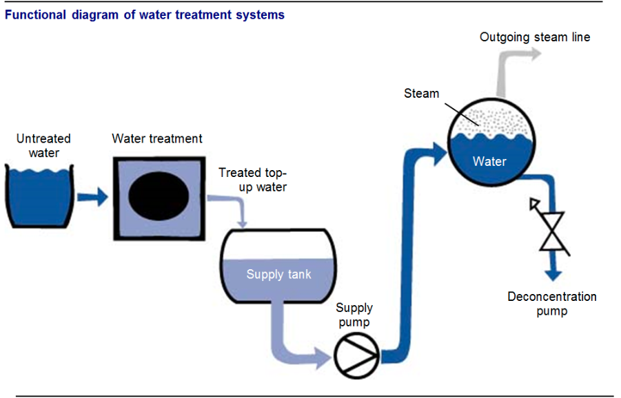
La technique la plus communément utilisée est un procédé par résines échangeuses d’ions. D’autres procédés, comme l’osmose inverse et la décarbonatation à la chaux, sont très rarement utilisés pour l’eau alimentaire des chaudières dans nos incinérateurs.
Unité d'osmose inverseL’osmoseur est un filtre de très grande efficacité. Il laisse passer l’eau mais retient les particules et les sels dissous. On obtient ainsi d’une part de l’eau très pure et d’autre part une eau chargée de toutes les impuretés, appelée aussi rétentat.
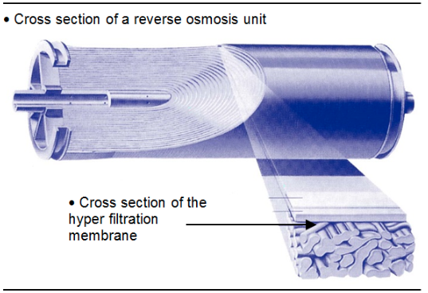
Le principe de l'osmose inverse {0.3cm}Cette technique s’apparente à une filtration très poussée. Il s’agit de comprimer (la pression peut atteindre 70 bars) de l’eau pour qu’elle passe à travers une membrane « filtrante » appelée semi-perméable. Dans le principe, l’installation est simple : elle comprend une membrane filtrante et une pompe haute pression.
Equipement d'un osmoseurDans la pratique, un osmoseur est constitué d’un module d’osmose, d’une pompe haute pression qui dirige l’eau déjà traitée sur la membrane du module. Avant de passer dans l’osmoseur, l’eau doit être déjà adoucie au minimum : si le module est alimentée en eau non adoucie, la membrane peut être détruite définitivement. On a deux sorties : le rétentat ou rejet et le perméat (eau osmosée).
Des manomètres permettent la surveillance des pressions. Un pressostat arrête la pompe en cas de surpression ou en cas de manque d’eau. La mise en œuvre de ce procédé pose différents problèmes :
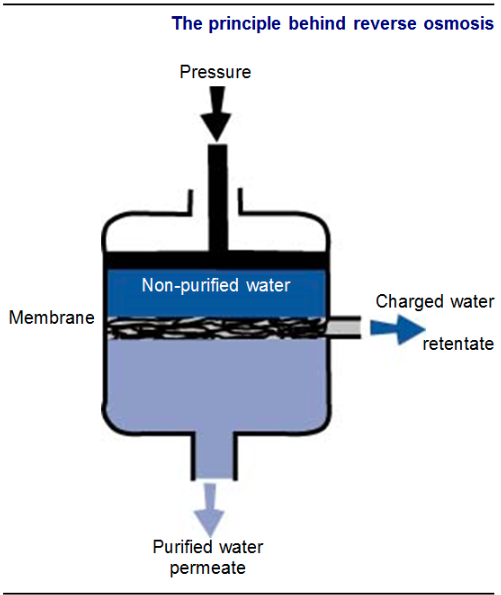
Ce sont des petites billes de plastique (Ø 0,4 à 1,2 mm) qui ont la capacité de retenir sélectivement certaines familles de sels dissous.
Les échanges ioniques
Le phénomène qui est à l’origine de la déminéralisation est l’échange ionique : on remplace les ions indésirables par d’autres acceptables du même signe (les anions par d’autres anions, les cations par d’autres cations). Cela n’est possible que grâce à l’existence de différences d’affinité entre les différents ions et la résine, c’est-à-dire que la résine préfère accrocher les ions indésirables en lieu et place de ceux qu’elle a initialement accroché à elle. Cette opération se déroule dans des échangeurs.
Les échangeurs
Un échangeur se présente comme un réservoir avec des entrées et des sorties. Le réservoir contient des billes de résine sur lesquelles viennent se fixer les composés indésirables au fur et à mesure que les composés acceptables sont relargués.
Après le passage d’une certaine quantité d’eau à traiter, la résine est saturée, c’est-à-dire qu’elle ne peut plus rien fixer. Alors elle subit un cycle de « nettoyage » ou plutôt de régénération, avant de redevenir disponible pour le cycle de traitement.
Les cycles nécessitent donc une régulation.
Il existe deux types de résines :
Elles se nomment échangeuses car pour retenir les sels dissous indésirable elles « relarguent » dans l’eau un composé chimique qui ne pose pas de problèmes pour nos chaudières : il y a un échange d’ions.
En fonction de la qualité d’eau de chaudière attendue, il est possible de choisir parmi trois procédés d’épuration utilisant les résines :
L’adoucissement correspond à un simple retrait des calcium et magnésium de l’eau par des résines échangeuses de cations qui relarguent du sel de sodium.
L’adoucisseur est composé :
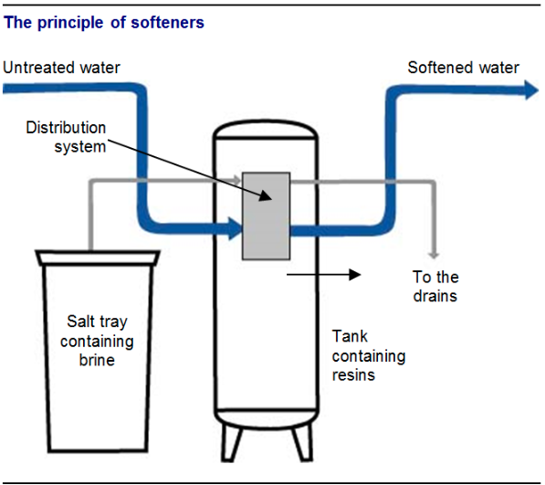
[width=0.6]{Images/M14/M14_7.png}
Le principe de fonctionnement se décompose en deux phases :
La régénération est décomposée en quatre phases :
Dans la phase d’adoucissement, l’eau brute est envoyée sur des résines qui retiennent le calcium, l’eau est renvoyée vers l’installation avec le sodium.
Les résines une fois saturées en calcium ne sont plus efficaces. Il faut alors les régénérer. Le passage de l’eau de haut en bas finit par tasser les résines, il faut alors les détasser en envoyant de l’eau de bas en haut. Cette opération permet ainsi un brassage des résines et leur homogénéisation.
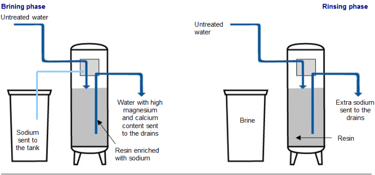
Pour remplacer le calcium fixé par les résines, on injecte dans l’adoucisseur une solution de saumure (sel de cuisine) qui passe au travers de l’adoucisseur. Le calcium est remplacé par du sodium.
Le rinçage permet au sodium de réagir complètement.
Pour chasser la solution de saumure qui ne s’est pas fixée sur la résine, cette dernière est rincée par de l’eau brute. Pendant cette opération, une solution de saumure est à nouveau préparée pour recommencer un nouveau cycle.
La décision de la régénération peut être prise :
La décarbonatation se déroule dans une tour, dans laquelle on pulvérise l’eau pour libérer le CO2 qui y est dissout. Ainsi on a minimisé les possibilités de fabriquer des carbonates donc du tartre.
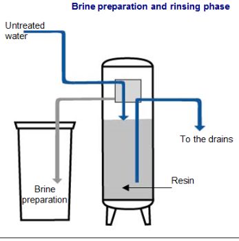
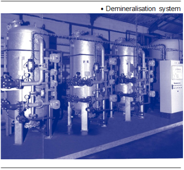
Déminéralisation totaleLa déminéralisation permet une élimination de tous les sels dissous. Ce procédé s’est généralisé sur toutes les usines d’incinération récentes, à cause des performances demandées à la chaudière. La déminéralisation de l’eau consiste à enlever tous les composés susceptibles de constituer des minéraux ou des sels insolubles.
Il s’agit d’un adoucissement plus poussé qui fonctionne sur le même principe. Cette eau est très agressive vis-à-vis des métaux, car elle est tellement pure qu’elle a tendance à dissoudre le métal ; les canalisations doivent être en inox ou en matière plastique.
On alimente la station de déminéralisation par l’eau à traiter. Cette eau va passer à travers quatre éléments principaux dans la chronologie suivante :
a) Retrait des cations dans un échangeur de cations
Les cations ou ions [+] sont fixés sur de la résine chargée [–] car les opposés s’attirent. Les ions indésirables arrêtés sont Ca2+, Mg2+. Le calcium et le magnésium sont retirés de l’eau. On a donc « enlevé » la dureté. C’est pour cette raison que cette phase se nomme aussi adoucissement.
En contrepartie, ces ions ont été remplacés par des ions H+ acceptables. Avec cette résine, on a capté tous les ions [+] indésirables. Donc, dans l’eau, après passage dans la résine, il ne reste plus que des ions [–] à traiter dans une autre résine.
b) Décarbonatation
Il s’agit du même principe que pour l’adoucissement : la concentration des carbonates et bicarbonates est diminuée.
c) Retrait des anions dans un échangeur d’anions
L’eau décarbonatée, contenant essentiellement des ions H+ comme ions [+] et différents ions [–] dont les chlorures (Cl–), les sulfates (SO42–), les bicarbonates (HCO3–) et les silicates (HSiO3–), passe dans un second type de résine chargée [+]. Donc tous les ions chargés [–] sont retenus par la résine. Cette étape permet de diminuer la concentration des acides les plus « corrosifs » de l’eau. De même, elle permet de diminuer la quantité de silice.
En contrepartie, ces ions ont été remplacés par des ions OH– (acceptables). À ce stade, on voit que l’eau ne contient plus que H+ et OH– ( en théorie).
d) Retrait des derniers ions [+] et [–] par polishing dans certains cas
Cette étape n’existe pas dans toutes les usines. L’eau qui a déjà été bien purifiée subit un dernier passage dans un échangeur mixte. Il y a un mélange des deux types de résine, une qui capte les éléments [–] et une qui capte les éléments [+]. Ainsi, on obtient un haut niveau de pureté .
e) Stockage
L’eau purifiée est acheminée dans une bâche de stockage.
Le fonctionnement
a) Les durées Le fonctionnement de l’installation est cyclique. Il y a une période de « service » pendant laquelle l’eau est déminéralisée. Et il y a aussi une période de « régénération » pendant laquelle la résine est reconditionnée pour une nouvelle utilisation.
b) Principe de la déminéralisation
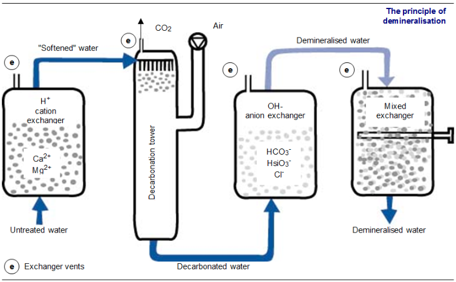
Les phases de service et de régénération
a) Les échangeurs de cations et d’anions
Quatre étapes se succèdent lors du fonctionnement normal de ce type d’échangeur : une étape de service, qui permet la production d’eau, et trois petites étapes de reconditionnement. 1. Étape de service. 2. Étape d’introduction d’un excès de régénérant (acide ou base selon l’échangeur). 3. Étape de déplacement pour répartir le régénérant. 4. Étape de rinçage pour enlever l’excès de régénérant qui ne s’est pas lié à la résine.
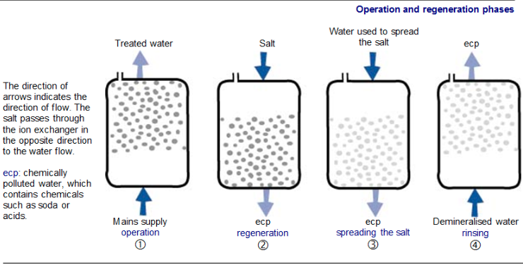
b) L’échangeur à lit mélangé
Son principe est le même que celui des échangeurs précédents.
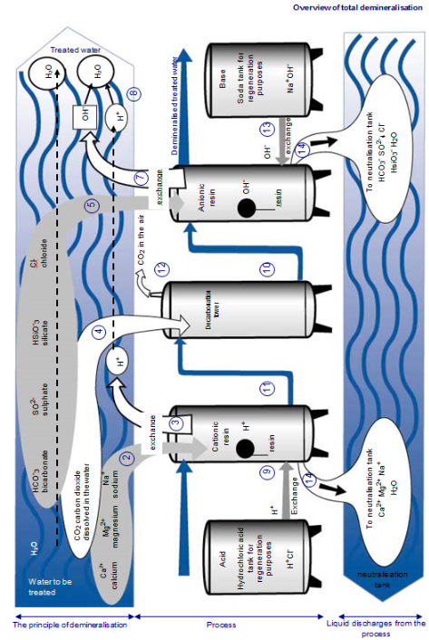
Légende du schéma ci-contre :
Plus la température est grande moins les gaz se dissolvent facilement dans l’eau(plus leur solubilité est petite), jusqu’à une température de 110 °C. Par exemple environ 9mg d’oxygène se dissolvent dans un litre d’eau à 20 °C. Alors qu’il n’y en a plus que 0,18 mg (50 fois moins) à 99 °C. Le principe du dégazage thermique consiste donc à porter l’eau à une température d’environ 105 °C (température optimale) en faisant une injection de vapeur dans l’eau de la bâche dégazante. L’eau ainsi dégazée, dont la teneur résiduelle en oxygène est proche de 0,03mg/l est stockée dans la bâche alimentaire. Au-delà de 110 °C, la solubilité de l’oxygène augmente à nouveau, il est donc inutile de travailler à plus haute température.
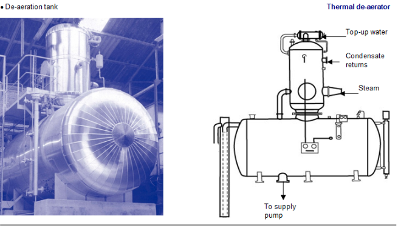
Le conditionnement de l’eau de chaudière consiste à ajouter des produits chimiques pour éviter les risques d’entartrage, de corrosion, d’embouage des circuits d’eau et même de primage. Il vient en complément des traitements d’épuration que nous venons de voir. D’ailleurs, les produits chimiques de conditionnement seront d’autant plus efficaces que l’épuration sera bien faite.
Les sociétés qui vendent ces produits de conditionnement proposent des mélanges savamment dosés.
Les produits essentiels au conditionnement de l’eau de chaudières sont au nombre de trois :
Pour établir la nature et la quantité d’impuretés que contient l’eau de la chaudière ou l’eau d’alimentation, il est nécessaire de prélever des échantillons de cette eau et de les soumettre à divers essais ou analyses. Les flacons à échantillons doivent être propres et rincés à l’eau à échantillonner. Avant de prélever un échantillon, il faut laisser couler cette eau un certain temps afin d’éviter d’utiliser l’eau qui aurait séjourné trop longtemps dans le conduit. On doit laisser refroidir cette eau à la température de la pièce et filtrer les matières en suspension ou les laisser décanter. On doit procéder aux analyses aussitôt que possible après le prélèvement de l’échantillon.
Sur certaines installations, il y a des échantillonneurs automatiques qui permettent l’analyse en continu.
La surveillance de la qualité de l’eau se fait en plusieurs points :
La détermination du TH, du TA, du TAC et des chlorures se fait le plus souvent par méthode titrimétrique qui se déroule ainsi :
La quantité du produit chimique ajouté pour le changement de couleur révèle le taux de l’impureté recherchée.
La détermination du taux, de réducteur d’oxygène, des phosphatants et de la silice restant en chaudière est le plus souvent réalisée par une méthode photo-colorimétrique. Cette technique consiste à mesurer les concentrations en exposant les échantillons au passage d’un rayon de couleur choisie en fonction du produit à mesurer. Ce rayonnement est absorbé uniquement par les éléments recherchés. L’intensité lumineuse du rayonnement sera d’autant plus basse que la concentration en éléments recherchés dans l’eau sera grande. La modification de la luminosité est observée par un capteur lumineux qui permet d’afficher directement la concentration des éléments recherchés.
Le pH et la conductivité sont déterminés par des appareils électroniques munis de deux électrodes réunies dans un petit cylindre en verre ou en plastique. Ce petit cylindre est plongé dans la solution à tester et l’affichage de l’appareil donne la valeur du paramètre recherché.
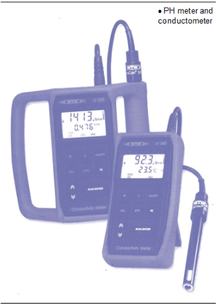
Certains procédés de traitement d’eau nécessitent la manipulation de certains réactifs dangereux pour l’organisme si l’on ne prend aucune précaution. Les acides attaquent la peau et provoquent de graves brûlures, lorsqu’il y a un contact direct. Les bases ont des effets proches des acides mais plus graves. Pour la manipulation de ces produits, il faut absolument utiliser des gants en matière plastique, des lunettes, un tablier et des bottes pour se protéger des projections.
Des douches sont disponibles à proximité des postes de traitement. En cas de projection, il faut les utiliser en lavant à grande eau la partie touchée.
Les acides peuvent s’évaporer sous l’effet de la chaleur ou s’ils sont mélangés avec d’autres produits. Les produits sous forme de poudre sont volatils et peuvent s’introduire dans les voies respiratoires. Ils peuvent être dangereux pour les voies respiratoires. L’emploi d’un masque s’avère parfois nécessaire.
Dans tous les cas, l’étiquetage sur les produits signale quelles précautions à prendre pour leurs manipulations et les risques encourus.
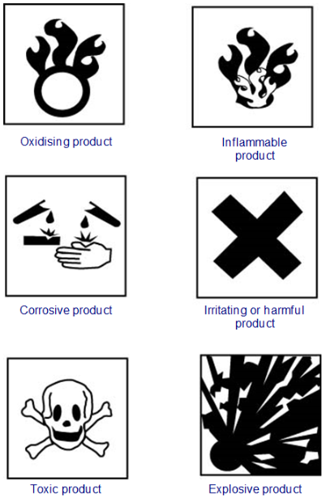
Interprétation des contrôles et consignes d’exploitation
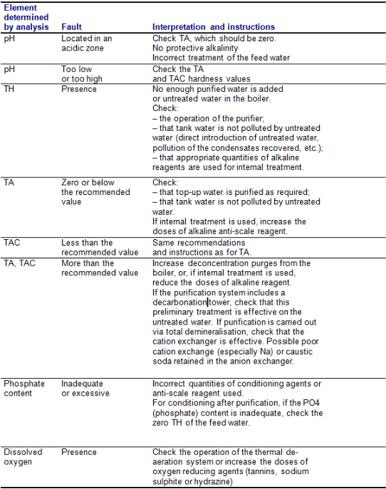
Tableau récapitulatif des valeurs guides pour la qualité de l'eau
1. Eau déminéralisée
Eau d'alimentation Pression : 40-60 bar pH : > 8,5 TH (°f) : < 0,05 02 : < 0,02 mg/l
Eau de chaudière TAC (°f) : < 15 TA (°f) : > 0,5 TAC (essentiel) pH : 10 à 11 phosphates (mg/l) : 10 à 60 Max. silice (mg/l) : 15
2. Eau adoucie décarbonatée ou adoucie
Eau d'alimentation Pression : 35-40 bar pH : > 8,5 TH (°f) : < 0,10 02 : < 0,02 mg/l
Eau de chaudière Max. TAC (°f): 40 Min. TAC (°f) : 10 pH : 11,2 phosphates (mg/l) : 30 Max. silice (mg/l): 40